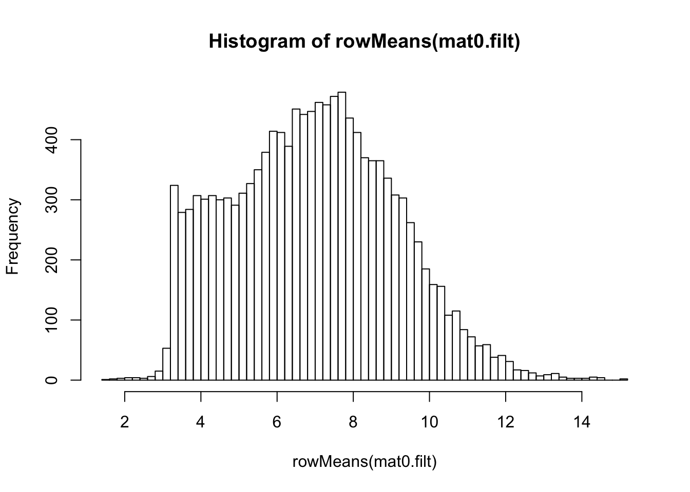

The goal of this data preprocessing procedure is to filter and transform the RNA-seq count data of the HVP01 Immunity to Hepatitis B Vaccine study, so that the filtered and transformed data follows approaximately a constinuous normal distribution, which can then be fitted by advanced statistical models, such as the linear mixed-effect regression model, for differential analysis and deconvolution analysis.
Our general strategy of preprocessing RNA-seq count data follows three steps:
This report is organized in the following sections.
Load useful packages.
library(DESeq2)
library(vsn) #for menaSdPlotBriefly, the DESeq2 R package provides two alternative approaches that offer more theoretical justification than the naive log2-transformation on RNA-seq count data. One makes use of the concept of variance stabilizing transformations (VST) (Tibshirani 1988; Huber et al. 2003; Anders and Huber 2010), and the other is the regularized logarithm (rlog), which incorporates a prior on the sample differences (Love, Huber, and Anders 2014). Both transformations produce transformed data on the log2 scale which has been normalized with respect to library size or other normalization factors.
For more information, please see DESeq2 Bioconductor page.
We obtain the original count data from our data provider in the file “HVP_countMatrix_noGlobin_May18.csv”, which contains filtered counts (genes with <10 counts across 5 samples are removed). These have also had the globin genes removed.
mycount <- read.csv("../HVP_countMatrix_noGlobin_May18.csv", row.names = 1)
ctab <- read.csv("../HVP_sampleTable_response_May18.csv")
dim(mycount)## [1] 15026 75The original count data has 15026 genes and 75 samples. Next, we build the DESeq2 data object for our count data.
## build dds object from count data
dds <- DESeqDataSetFromMatrix(countData = mycount,
colData = ctab,
design = ~ 1) #for the design formula, check out the "blind=TRUE" option in the transformation step## log2-transformation
ntd <- normTransform(dds)
mat0 <- assay(ntd)
hist(rowMeans(mat0), breaks=50)
meanSdPlot(mat0)## vst
vsd <- vst(dds)
mat1 <- assay(vsd)
hist(rowMeans(mat1), breaks=50)
meanSdPlot(mat1)## rlog
rld <- rlog(dds)## rlog() may take a long time with 50 or more samples,
## vst() is a much faster transformationmat2 <- assay(rld)
hist(rowMeans(mat2), breaks=50)
meanSdPlot(mat2)Working with the original data, we observe excessive low count genes. We will further filter the data by removing low count and low variance genes. First, let’s check the per gene mean and standard deviation.
## per gene mean count
gmeans <- rowMeans(mycount)
summary(gmeans)## Min. 1st Qu. Median Mean 3rd Qu. Max.
## 1.17 24.20 104.67 385.77 329.92 39982.93## per gene standard deviation
gsd <- apply(mycount, 1, sd)
summary(gsd)## Min. 1st Qu. Median Mean 3rd Qu. Max.
## 2.73 14.45 53.76 207.71 168.46 21554.67Based on the above, it is reasonable to set the following thresholds for the mean and standard deviation.
## set thresholds
m.thred <- 10
sd.thred <- 5
## keep high count and high variation genes
ind.kp <- (gmeans > m.thred) & (gsd > sd.thred)
## filted count data
mycount.filt <- mycount[ind.kp,]
dim(mycount.filt)## [1] 13169 75For data filtering, we remove the genes that have mean count below 10 and standard deviation below 5 across all samples. The filtered data has 13169 genes and 75 samples. Next, we build the DESeq2 data object for the filtered data.
## build dds object on the filtered count data
dds.filt <- DESeqDataSetFromMatrix(countData = mycount.filt,
colData = ctab,
design = ~ 1)## log2-transformation
ntd.filt <- normTransform(dds.filt)
mat0.filt <- assay(ntd.filt)
hist(rowMeans(mat0.filt), breaks=50)
meanSdPlot(mat0.filt)
## vst
vsd.filt <- vst(dds.filt)
mat1.filt <- assay(vsd.filt)
hist(rowMeans(mat1.filt), breaks=50)
meanSdPlot(mat1.filt)## rlog
rld.filt <- rlog(dds.filt)## rlog() may take a long time with 50 or more samples,
## vst() is a much faster transformationmat2.filt <- assay(rld.filt)
hist(rowMeans(mat2.filt), breaks=50)
meanSdPlot(mat2.filt)We decide to use the rlog transformed data on the filtered data.
## rename
dat.filt10 <- mat2.filtThe original data use Ensembl gene ids, and we map them to gene symbols using EnsDb.Hsapiens.v86.
library(EnsDb.Hsapiens.v86)
mymap <- select(EnsDb.Hsapiens.v86, key=rownames(dat.filt10), columns=c("SYMBOL"), keytype="GENEID")
detach("package:EnsDb.Hsapiens.v86", unload=TRUE)
detach("package:ensembldb", unload=TRUE)
## the final data only keep the genes that have unique gene symbols
dat.filt10.symbol <- dat.filt10 %>% as_tibble(rownames = NA) %>% rownames_to_column() %>%
right_join(mymap %>% distinct(SYMBOL, .keep_all = TRUE), by = c("rowname"="GENEID")) %>%
dplyr::select(-rowname) %>% column_to_rownames(var = "SYMBOL") %>%
as.matrix()Finally, we are going to work with dat.filt10.symbol, which has 13157 genes and 75 samples. After the filtering and data transformation, the following figure shows that the final data follows a nice close-to-normal distribution, and the variance is stable across the range of mean expression.
## combined plot
g1 <- ggplot(data.frame("mean"=rowMeans(dat.filt10.symbol)), aes(x=mean)) +
geom_histogram(color="black", fill="white") + ggtitle("(a) Histogram of mean expression")
g2 <- meanSdPlot(dat.filt10.symbol, plot = FALSE)$gg + ggtitle("(b) Mean-variance relationship")
g <- grid.arrange(g1, g2, nrow=1, widths = c(1, 1.5), top=textGrob("Preprocessed data of HVP01 study", gp = gpar(fontface = 2, fontsize = 15)))